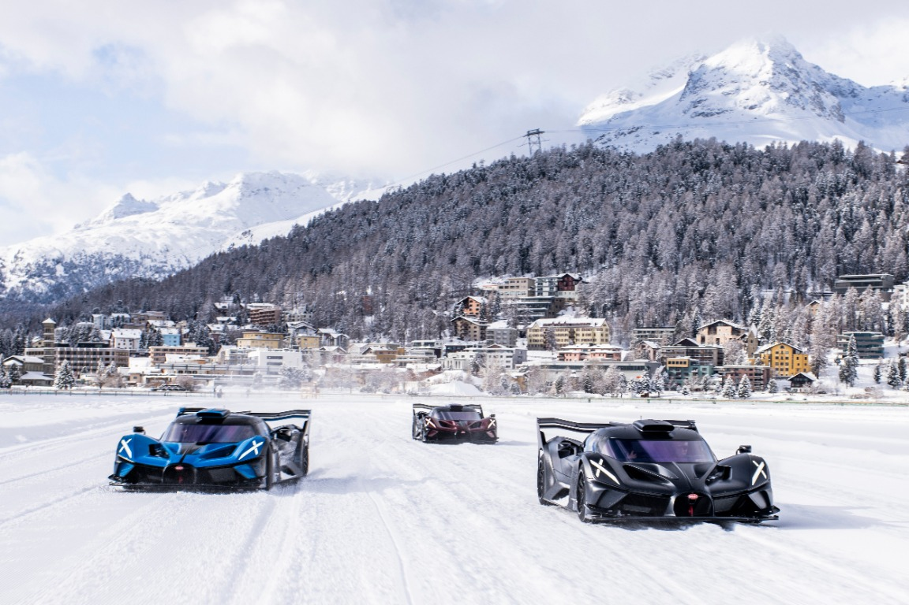
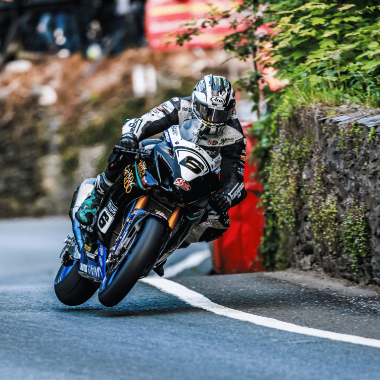
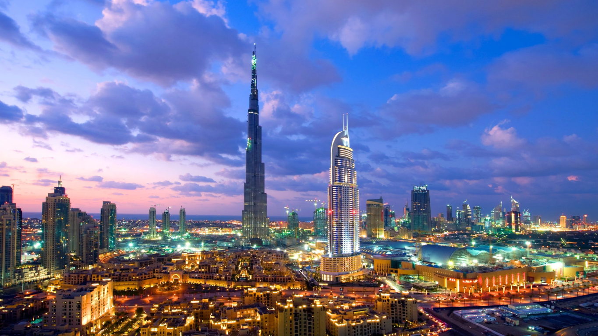
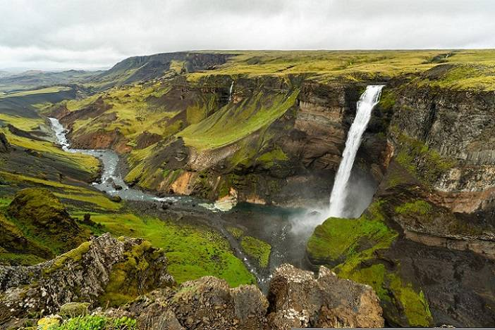

Vier plekken die
ik graag wil zien.
Sankt Moritz, de TT op Isle of Man, Dubai en IJsland: vier heel verschillende reizen die ik ooit wil maken. Hier verzamel ik ideeën voor onderweg, plekken om te bezoeken en dingen die ik vooraf moet uitzoeken.
ligt open
Waar wil ik heen?
Van bergmeren tot woestijn en van motoren tot watervallen. Dit staat er op mijn lijstje.
Voor ik mijn koffers pak
Dit zijn vier losse reizen; ze vormen samen geen route. Eerst kies ik wanneer ik wil gaan. Daarna kijk ik naar vervoer en verblijf en boek ik dingen die snel vol zitten. Omdat prijzen, regels en dienstregelingen kunnen veranderen, controleer ik die informatie opnieuw voordat ik iets vastleg.
Ook kijk ik naar mijn paspoort, eventuele visumregels, reisverzekering en het reisadvies. Mijn reserveringen en belangrijke telefoonnummers bewaar ik ook offline.
Vier plekken. Nu nog de juiste momenten vinden.Mijn reisplannen
Sankt Moritz.
Ik wil de bergen zien, met de Bernina-trein door het dal reizen en in de winter THE ICE meemaken. En natuurlijk wil ik ook gewoon even aan het meer zitten.
1.856 m

Zes dagen in het Engadin
- Dag 1Aankomst in het Engadin
Ik reis met de Rhätische Bahn naar Sankt Moritz, check in en maak een eerste wandeling langs het meer. Daarna rustig eten en op tijd naar bed.
- Dag 2THE ICE op het bevroren meer
Vandaag wil ik THE ICE bezoeken en de klassieke auto’s op het bevroren meer bekijken. Ik plan mijn verblijf rond de officiële evenementendatum en volg ter plekke de aanwijzingen van de organisatie. De toegang tot het ijs is alleen toegestaan waar dat wordt aangegeven. Het programma kan veranderen als de ijs- of weersomstandigheden niet veilig zijn.
- Dag 3Met de bergbaan naar Muottas Muragl
Ik neem de bergbaan omhoog voor het uitzicht over het Engadin. Als het weer en de paden het toelaten, maak ik een korte wandeling en lunch ik boven. In de winter controleer ik vooraf of de baan rijdt.
- Dag 4Met de Bernina-trein naar Tirano
Ik maak er een dagtocht van en stap op de trein richting Tirano. Onderweg let ik op de viaducten, de Berninapas en het uitzicht op de gletsjers. Vooraf controleer ik de dienstregeling en of ik een zitplaats moet reserveren.
- Dag 5Een dag in Val Fex
Ik reis naar Sils Maria en verken Val Fex te voet of, als dat past, met een paardenkoets. Ik houd het tempo rustig en kies in de winter alleen routes die op dat moment veilig en open zijn.
- Dag 6Laatste ochtend in Sankt Moritz
Ik ontbijt rustig, maak nog een rondje langs het meer en neem daarna de trein verder. Voor vertrek controleer ik de dienstregeling en houd ik wat speling aan.
THE ICE bezoeken
Ik wil THE ICE graag eens zien: klassieke auto’s op het bevroren meer, met de bergen op de achtergrond. Daarvoor moet ik mijn reis op de evenementendatum plannen. De datum, kaartverkoop en regels verschillen per editie, dus die controleer ik bij de organisatie. Ook het weer en de staat van het ijs kunnen het programma beïnvloeden. Op het ijs ga ik alleen op plekken die voor bezoekers zijn opengesteld. Ben ik er op een andere datum, dan maak ik van die dag een winterwandeling of sneeuwschoentocht.
Waar ik kan verblijven
Sankt Moritz Dorf is handig voor winkels, restaurants en de bergbanen; St. Moritz Bad ligt bij het meer. Ik kijk ook naar Celerina, Samedan en Pontresina. Die plaatsen zijn wat rustiger en soms voordeliger, maar ik controleer wel hoe laat de trein of bus teruggaat. Vanuit Zürich reis ik per trein via Chur of Landquart. Voor de Bernina-lijn zoek ik de dienstregeling op en reserveer ik waar dat nodig is.
Winter of zomer?
Wat ik er wil proeven
Engadiner notentaart bij de koffie en pizzoccheri na een wandeling staan op mijn lijstje. En ik wil ook tijd overhouden om gewoon ergens aan het meer te zitten, zonder dat ik alweer op weg moet naar de volgende bezienswaardigheid.
Isle of Man & de TT.
Ik wil de TT-races graag eens vanaf het eiland bekijken. En als ik er toch ben, wil ik ook Douglas, de kust en de rest van het eiland zien.
Man

Een week op Isle of Man
- Dag 1Aankomst in Douglas
Ik neem de veerboot vanuit Heysham of Liverpool. Na aankomst wandel ik langs de promenade en kijk ik hoe ik me de rest van de week ga verplaatsen.
- Dag 2Douglas en de tram naar Laxey
Ik verken Douglas en neem de Manx Electric Railway langs de oostkust. In Laxey bezoek ik de Great Laxey Wheel als die open is.
- Dag 3Een dag bij de TT
Ik zoek vooraf een toegestane kijkplek uit en ga er op tijd heen, voordat de Mountain Course wordt afgesloten. Ik controleer de regels en het weer en volg de aanwijzingen van de marshals.
- Dag 4Peel en de westkust
Ik bezoek Peel Castle en loop langs de haven. Als het weer meezit, maak ik een wandeling langs de kust.
- Dag 5Met de stoomtrein naar Port Erin
Ik neem de Isle of Man Steam Railway naar het zuiden. Bij goed weer loop ik door naar Bradda Head; anders houd ik het bij Port Erin.
- Dag 6–7Een vrije dag en terug naar huis
Ik houd een dag over voor een extra racesessie, het Manx Museum of een plek waar ik nog niet aan toegekomen ben. Daarna neem ik de boot terug; ik plan genoeg tijd voor de haven.
Welke TT-dagen kies ik?
De TT duurt meestal ongeveer twee weken. Eerst zijn er kwalificaties, daarna de races. Ik bekijk het programma zodra de data bekend zijn: misschien past een kwalificatiedag beter, misschien wil ik juist een racedag meemaken. Het schema verschilt per jaar. De Mountain Course loopt over openbare wegen die tijdens sessies worden afgesloten. Ik blijf achter de afzettingen, ga de baan nooit op en luister altijd naar de marshals.
Waar ik verblijf
Douglas lijkt me een handige uitvalsbasis: de veerboot komt er aan en ik kan er de bus, elektrische tram en stoomtrein nemen. Tijdens de TT zal het druk zijn, dus zodra de data bekend zijn wil ik mijn overtocht en verblijf regelen. Ik controleer de dienstregeling goed, want door de races kunnen wegen en routes tijdelijk dicht zijn.
Een paar dagen Dubai.
In Dubai wil ik meer zien dan de hoge torens. Ik wil door Al Fahidi lopen, met een abra de Creek oversteken en ook een dag buiten de stad doorbrengen.
& woestijn

Zes dagen in Dubai
- Dag 1Al Fahidi en de Creek
Ik begin in de oude wijk Al Fahidi. Daarna steek ik met een abra de Creek over en kijk ik rond op de souks in Deira. Ik houd het rustig; na de reis hoef ik niet meteen alles te zien.
- Dag 2Downtown en de Burj Khalifa
Ik wandel rond Downtown en bezoek Dubai Mall. Als ik naar boven wil in de Burj Khalifa, reserveer ik vooraf een tijdslot. Tegen de avond blijf ik in de buurt om de skyline verlicht te zien.
- Dag 3Een ochtend aan zee
Ik kies Jumeirah of Kite Beach en ga vroeg, voordat het te warm wordt. Als ik de moskee bezoek, kijk ik of er een rondleiding is en houd ik rekening met de kledingregels.
- Dag 4Een uitstap naar de woestijn
Ik boek bij een aanbieder die duidelijk uitlegt wat de tocht inhoudt en hoe het vervoer geregeld is. Liever iets rustigers? Dan zoek ik een natuurgebied of een wandeling met een gids.
- Dag 5Kunst en lunch in Al Quoz
Ik neem een kijkje bij de galeries en ateliers van Alserkal Avenue. Daarna kies ik ergens een plek om te eten en laat ik de rest van de middag open.
- Dag 6De laatste ochtend
Ik haal nog wat dadels of kruiden en maak een laatste wandeling. Daarna vertrek ik op tijd naar de luchthaven; Dubai is groter dan het soms op de kaart lijkt.
Waar ik wil verblijven
Ik zoek een hotel of appartement dicht bij een metrostation. Downtown is handig voor de Burj Khalifa en Dubai Mall; Deira of Bur Dubai voor de Creek en de oude wijken; Marina/JBR als ik liever dicht bij het strand zit. De afstanden zijn groot, dus ik plan mijn dagen per buurt. Voor de laatste stukken kan ik de bus, tram of taxi nemen. Voor ik vertrek kijk ik bij RTA de routes, tijden en betaalmogelijkheden na.
Een paar dingen om rekening mee te houden
Voor vertrek lees ik het reisadvies, controleer ik de visumregels die voor mij gelden en zoek ik op wat handig is om te weten over lokale gebruiken en kleding. Ik vraag toestemming voordat ik mensen fotografeer. Omdat het buiten warm kan zijn, plan ik wandelingen liefst vroeg of later op de dag. Voor een woestijntocht kijk ik goed wat de excursie inhoudt, waar het vervoer me ophaalt en wat de annuleringsregels zijn.
Een roadtrip door IJsland.
Ik wil de watervallen en gletsjers met eigen ogen zien en onderweg stoppen waar het mooi is. Voor mijn eerste reis lijkt de zuidkust me een goede plek om te beginnen.
& ijs

Een route van tien dagen
- Dag 1Aankomst in Reykjavík
Ik check in en maak een wandeling door het centrum en langs de haven. Als er nog tijd is, bezoek ik Hallgrímskirkja of Harpa en haal ik wat eten voor onderweg.
- Dag 2De Golden Circle
Ik vertrek op tijd voor Þingvellir, het geothermische gebied Geysir en Gullfoss. Ik blijf op de aangegeven paden en neem mijn tijd bij de stops.
- Dag 3Seljalandsfoss en Skógafoss
Ik rijd over weg 1 richting de zuidkust en stop bij de watervallen. Voor ik uitstap kijk ik naar het weer en de omstandigheden; rond watervallen kunnen stenen glad zijn en kan het hard waaien.
- Dag 4Vík en de kust
Ik verken de omgeving van Vík en houd op het zwarte strand ruim afstand van de zee. Sneaker waves kunnen onverwacht ver het strand op komen. Ik let op waarschuwingen en ga nooit met mijn rug naar het water staan.
- Dag 5Skaftafell
Ik maak een wandeling in Vatnajökull National Park en overnacht in de buurt, bijvoorbeeld bij Skaftafell of Kirkjubæjarklaustur. Een gletsjer op gaan doe ik alleen met een gids en de juiste uitrusting.
- Dag 6Jökulsárlón en Höfn
Ik bezoek de gletsjerlagune en Diamond Beach en rijd daarna door naar Höfn. Ik blijf op veilige afstand van het ijs en volg de borden bij het strand.
- Dag 7Op mijn gemak terugrijden
Ik rijd westwaarts en kijk onderweg waar ik nog wil stoppen. Als het weer of de weg niet meewerkt, sla ik een stop over in plaats van door te haasten.
- Dag 8Terug naar Reykjavík
Ik rijd verder naar Reykjavík. Een omweg via Reykjanes maak ik alleen als de wegen en veiligheidsinformatie dat toelaten; anders houd ik de middag vrij in de stad.
- Dag 9–10Ruimte om mijn plannen aan te passen
Ik houd de laatste dagen vrij voor Reykjavík, een museum of een extra stop die onderweg goed uitkomt. Zo hoef ik niet elk plan door te zetten als het weer omslaat.
Waar ik kan overnachten
Ik boek liefst op een paar plekken langs de route, zodat ik niet elke dag lange afstanden hoef te rijden: Reykjavík voor het begin en einde, Hella of Flúðir bij de Golden Circle, Vík aan de zuidkust en Skaftafell, Kirkjubæjarklaustur of Höfn voor de gletsjerlagune. Voor ik iets boek, kijk ik naar de rijtijd en de weg. Bij winterweer maak ik de route korter.
Voorzichtig onderweg
Het weer en de wegomstandigheden kunnen snel veranderen. Daarom kijk ik voor vertrek op umferdin.is voor wegen en verkeer, Safetravel.is voor veiligheidsmeldingen en de IJslandse weerdienst. Ik blijf op de paden en wegen die voor bezoekers bedoeld zijn. Off-road rijden mag niet. F-wegen neem ik alleen als ze open zijn en mijn auto daarvoor geschikt is. Ik stop niet op een gevaarlijke plek om een foto te maken.